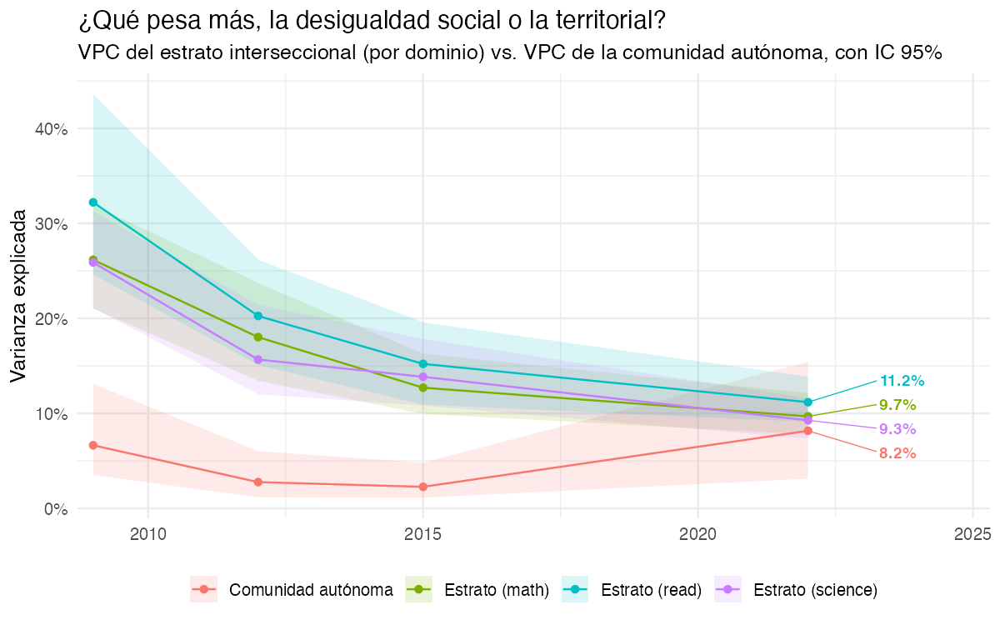
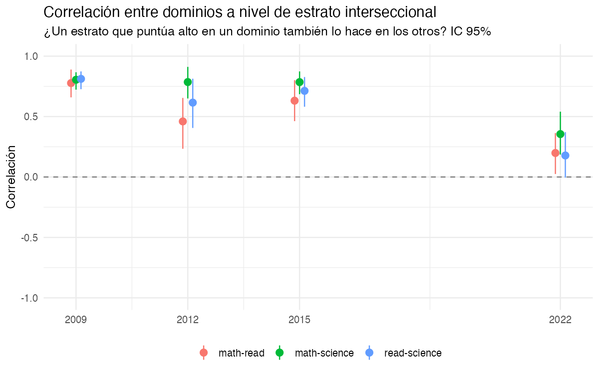
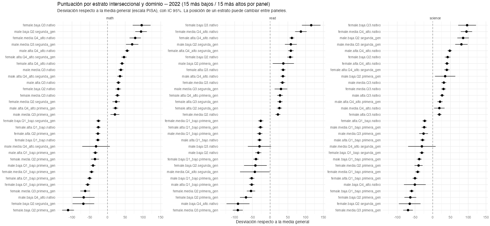
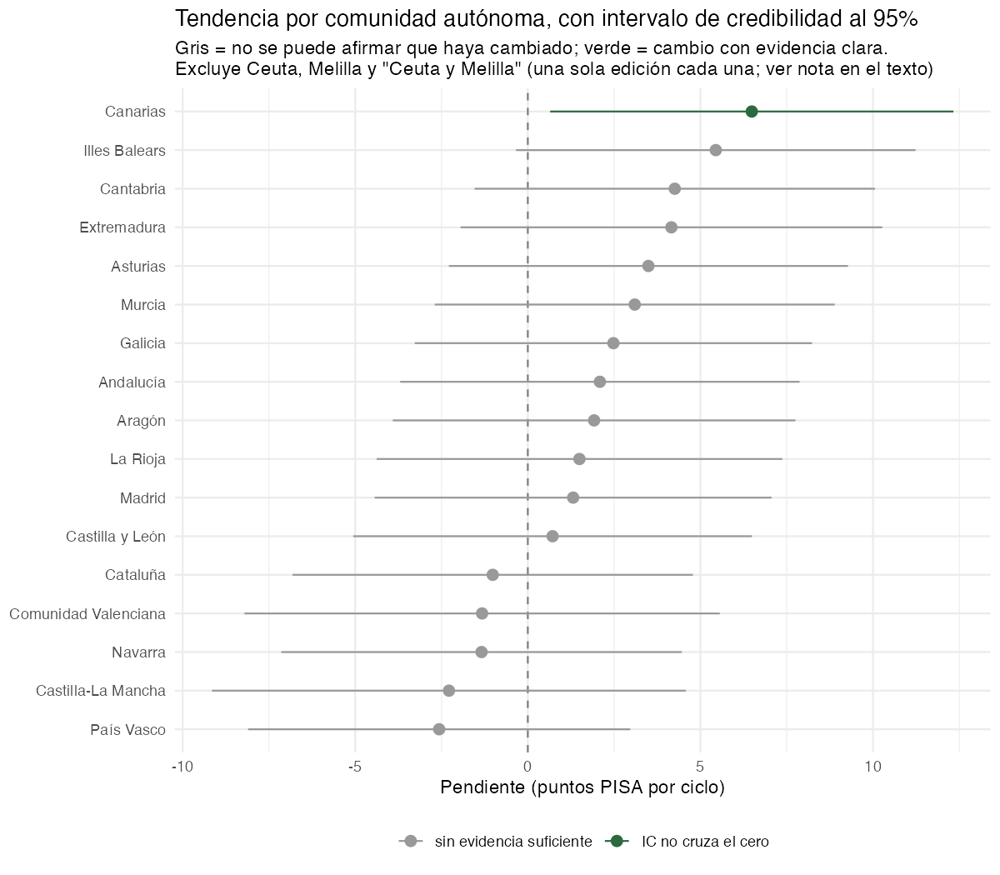
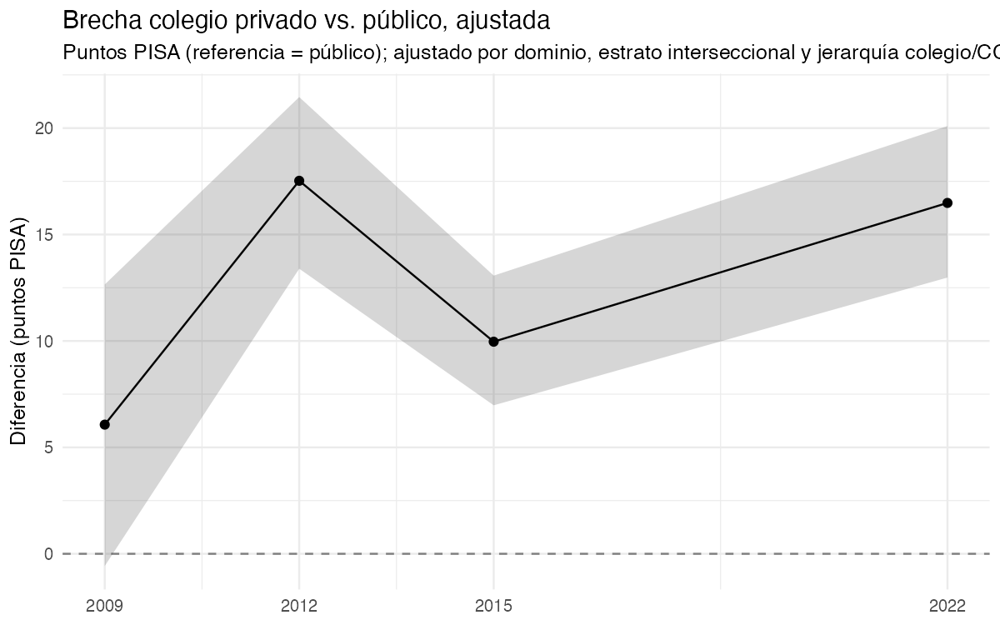
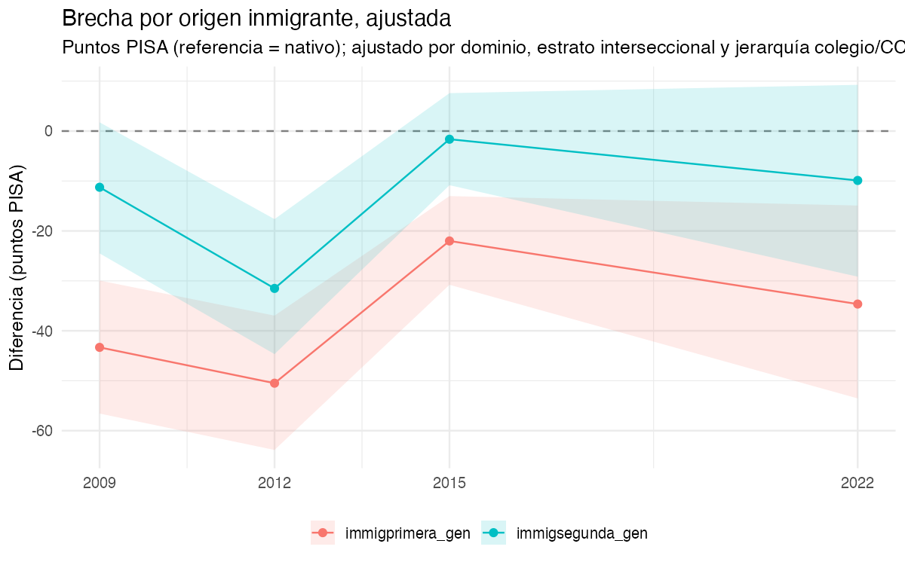

5 Resultados
Este capítulo se genera a partir de las tablas y figuras que produce R/05_communicate_uncertainty.R; el texto lee directamente los resultados guardados, así que se actualiza solo al volver a ejecutar el pipeline.
5.2 2. ¿Un estrato o un colegio desigual en un dominio lo es también en los otros?
En 2022, la correlación entre dominios a nivel de estrato interseccional es: math-read: 0.20 (IC 0.02 – 0.36); math-science: 0.36 (IC 0.19 – 0.54); read-science: 0.18 (IC -0.01 – 0.37).

Nota temporal (2026-09-14): mientras se prueba una configuración más rápida del ajuste (ver R/03_model_maihda_ccaa_inla.R), el efecto de colegio está simplificado a iid compartido entre los tres dominios – por eso de momento no hay una correlación entre dominios a nivel de colegio que mostrar aquí (solo la de estrato, arriba). El nivel estrato conserva la estructura trivariante completa sin cambios.
Qué mirar aquí: una correlación alta y con intervalo lejos de cero indica que la desigualdad interseccional es sobre todo una característica general del estrato (quien puntúa bajo en un dominio tiende a puntuar bajo en los demás); una correlación baja o incierta indica que el patrón varía sustancialmente entre materias.
5.3 3. Qué estratos puntúan más alto y más bajo, por dominio

| Estratos interseccionales, ordenados de menor a mayor puntuación, por dominio | ||
| Estrato | Desviación | IC 95% |
|---|---|---|
| math | ||
| female.baja.Q2.primera_gen | -111.1 | -127.7 – -94.4 |
| female.baja.Q2.segunda_gen | -67.9 | -98.4 – -37.4 |
| male.baja.Q4_alto.nativo | -67.1 | -97.8 – -36.3 |
| female.media.Q3.primera_gen | -62.9 | -76.5 – -49.2 |
| female.baja.Q1_bajo.primera_gen | -55.8 | -62.5 – -49.2 |
| female.alta.Q1_bajo.primera_gen | -50.5 | -57.2 – -43.7 |
| female.media.Q1_bajo.primera_gen | -44.9 | -51.7 – -38 |
| male.baja.Q1_bajo.primera_gen | -40.7 | -47.5 – -33.9 |
| female.media.Q2.primera_gen | -35.2 | -46.6 – -23.8 |
| male.alta.Q1_bajo.primera_gen | -34.2 | -41.1 – -27.3 |
| male.media.Q4_alto.segunda_gen | -32.2 | -71.1 – 6.7 |
| female.baja.Q1_bajo.nativo | -27.1 | -33.3 – -20.9 |
| female.alta.Q2.primera_gen | -26.9 | -33.5 – -20.3 |
| female.alta.Q1_bajo.nativo | -25.8 | -32 – -19.5 |
| female.baja.Q1_bajo.segunda_gen | -25.5 | -31.9 – -19 |
| male.media.Q3.primera_gen | 21.0 | 8.5 – 33.4 |
| male.alta.Q4_alto.primera_gen | 22.6 | 15.2 – 30.1 |
| female.media.Q2.segunda_gen | 24.5 | 14 – 35 |
| female.media.Q3.nativo | 28.1 | 21.3 – 35 |
| female.baja.Q2.nativo | 30.4 | 22.6 – 38.1 |
| male.alta.Q3.nativo | 30.8 | 24.7 – 37 |
| male.alta.Q4_alto.segunda_gen | 35.2 | 27.7 – 42.8 |
| male.media.Q3.nativo | 37.7 | 30.7 – 44.6 |
| female.alta.Q4_alto.nativo | 41.1 | 35 – 47.3 |
| female.alta.Q4_alto.segunda_gen | 46.6 | 39.3 – 53.8 |
| male.alta.Q4_alto.nativo | 55.6 | 49.4 – 61.7 |
| male.media.Q3.segunda_gen | 69.5 | 52.1 – 87 |
| female.media.Q4_alto.nativo | 78.2 | 62.2 – 94.1 |
| male.baja.Q2.segunda_gen | 94.6 | 78.3 – 110.9 |
| female.baja.Q3.nativo | 96.4 | 71.1 – 121.6 |
| read | ||
| female.media.Q3.primera_gen | -91.1 | -105.1 – -77.1 |
| male.baja.Q4_alto.nativo | -90.5 | -122.8 – -58.2 |
| female.baja.Q2.primera_gen | -68.0 | -85.1 – -51 |
| female.media.Q2.primera_gen | -53.9 | -65.6 – -42.1 |
| male.alta.Q1_bajo.primera_gen | -52.0 | -59.3 – -44.6 |
| male.baja.Q1_bajo.primera_gen | -51.9 | -59.2 – -44.6 |
| male.media.Q4_alto.segunda_gen | -43.1 | -84.8 – -1.3 |
| female.baja.Q2.segunda_gen | -41.5 | -73.5 – -9.4 |
| female.baja.Q1_bajo.primera_gen | -39.8 | -46.9 – -32.7 |
| male.baja.Q2.nativo | -33.3 | -41.8 – -24.8 |
| male.baja.Q3.nativo | -30.0 | -62.7 – 2.8 |
| male.alta.Q1_bajo.nativo | -29.9 | -36.6 – -23.1 |
| male.media.Q1_bajo.primera_gen | -29.5 | -37.1 – -21.9 |
| female.alta.Q1_bajo.primera_gen | -27.2 | -34.4 – -20 |
| female.media.Q1_bajo.primera_gen | -26.5 | -33.8 – -19.2 |
| female.media.Q2.nativo | 22.0 | 15.1 – 28.9 |
| female.alta.Q2.segunda_gen | 26.2 | 19.2 – 33.1 |
| female.alta.Q3.segunda_gen | 27.8 | 20.6 – 35 |
| female.alta.Q4_alto.primera_gen | 27.9 | 19.9 – 36 |
| male.media.Q3.segunda_gen | 30.7 | 12.7 – 48.6 |
| female.media.Q3.nativo | 34.8 | 27.5 – 42.1 |
| male.alta.Q4_alto.nativo | 36.1 | 29.4 – 42.7 |
| female.alta.Q3.nativo | 36.7 | 30.1 – 43.4 |
| male.baja.Q2.primera_gen | 37.3 | 7.4 – 67.2 |
| female.baja.Q2.nativo | 56.6 | 48.4 – 64.8 |
| female.alta.Q4_alto.segunda_gen | 58.4 | 50.7 – 66.1 |
| male.baja.Q2.segunda_gen | 58.4 | 41.7 – 75.2 |
| female.alta.Q4_alto.nativo | 61.2 | 54.5 – 67.9 |
| female.media.Q4_alto.nativo | 86.7 | 70.4 – 103 |
| female.baja.Q3.nativo | 115.8 | 89.7 – 142 |
| science | ||
| female.media.Q3.primera_gen | -69.7 | -83.3 – -56 |
| female.baja.Q2.segunda_gen | -64.9 | -95.4 – -34.5 |
| female.baja.Q2.primera_gen | -63.2 | -79.8 – -46.6 |
| female.baja.Q1_bajo.primera_gen | -59.6 | -66.2 – -52.9 |
| male.baja.Q4_alto.nativo | -50.5 | -81.2 – -19.8 |
| female.alta.Q1_bajo.primera_gen | -50.1 | -56.8 – -43.4 |
| female.media.Q1_bajo.primera_gen | -42.4 | -49.2 – -35.6 |
| female.media.Q2.primera_gen | -40.0 | -51.3 – -28.6 |
| male.baja.Q1_bajo.primera_gen | -38.1 | -44.9 – -31.3 |
| female.baja.Q1_bajo.segunda_gen | -30.7 | -37.1 – -24.3 |
| male.media.Q4_alto.segunda_gen | -30.6 | -69.4 – 8.1 |
| male.alta.Q1_bajo.primera_gen | -28.7 | -35.6 – -21.9 |
| male.media.Q3.primera_gen | -25.9 | -38.3 – -13.5 |
| male.media.Q1_bajo.primera_gen | -24.1 | -31.2 – -17 |
| female.alta.Q1_bajo.nativo | -22.8 | -29 – -16.5 |
| female.alta.Q3.nativo | 18.6 | 12.5 – 24.7 |
| male.media.Q4_alto.nativo | 18.6 | 4 – 33.3 |
| male.alta.Q4_alto.primera_gen | 20.5 | 13.1 – 27.9 |
| male.alta.Q3.nativo | 26.4 | 20.3 – 32.5 |
| female.media.Q3.nativo | 30.3 | 23.5 – 37.1 |
| male.media.Q3.nativo | 31.2 | 24.3 – 38.1 |
| male.baja.Q2.primera_gen | 35.0 | 6.4 – 63.5 |
| female.alta.Q4_alto.segunda_gen | 39.6 | 32.4 – 46.8 |
| female.alta.Q4_alto.nativo | 40.1 | 34 – 46.2 |
| female.baja.Q2.nativo | 41.9 | 34.2 – 49.7 |
| male.alta.Q4_alto.nativo | 47.9 | 41.8 – 54 |
| male.media.Q3.segunda_gen | 80.8 | 63.3 – 98.2 |
| male.baja.Q2.segunda_gen | 85.6 | 69.3 – 101.9 |
| female.media.Q4_alto.nativo | 95.0 | 79.1 – 111 |
| female.baja.Q3.nativo | 96.8 | 71.6 – 122 |
Qué mirar aquí: a diferencia del proyecto internacional, aquí los estratos incluyen origen inmigrante como cuarta dimensión (72 combinaciones posibles), y ahora hay un panel por dominio. Vale la pena comprobar si los estratos en el extremo bajo comparten la categoría de origen inmigrante con independencia de género o educación parental – eso apuntaría a que esa dimensión domina el resultado más que las interacciones entre las cuatro – y si un mismo estrato aparece en el extremo bajo en los tres paneles o solo en uno (la sección 2 cuantifica esto de forma agregada vía la correlación entre dominios).
5.4 4. Tendencia por comunidad autónoma
AdvertenciaCeuta y Melilla: por qué no aparecen con una “tendencia”
Ceuta y Melilla no tienen una serie temporal continua en los microdatos del INEE: en 2009 se registran como una única categoría combinada, “Ceuta y Melilla”; en 2012 y 2015 no hay datos de ninguna de las dos; y solo en 2022 aparecen ya separadas, como “Ceuta” y “Melilla”. El resultado es que cada una de esas tres etiquetas tiene datos de una sola edición – y una tendencia (una pendiente en el tiempo) no puede calcularse con un único punto temporal. Si se fuerza igualmente el cálculo, lo que sale es un artefacto del modelo (no un cambio real), y puede salir muy grande y en cualquier dirección – de ahí que, en una versión anterior de esta figura, “Ceuta y Melilla” apareciera con la subida más pronunciada de todas y “Ceuta” con la bajada más pronunciada, cuando en realidad se trata del mismo territorio partido en dos etiquetas sin solapamiento temporal.
Por eso estas tres filas se excluyen del gráfico y de las cifras “mejor/peor” de más abajo. En su lugar, la tabla siguiente da su puntuación media bruta (sin ajustar) en la única edición disponible de cada una, para no perder el dato del todo:
| Ceuta y Melilla, fuera del análisis de tendencia | ||||
| Comunidad autónoma | Edición | Puntuación media | IC 95% | N |
|---|---|---|---|---|
| Ceuta y Melilla | 2009 | 415.0 | 409.7 – 420.4 | 1370 |
| Ceuta | 2022 | 403.1 | 393.7 – 412.5 | 345 |
| Melilla | 2022 | 407.8 | 396.6 – 419 | 259 |
De 17 comunidades autónomas con al menos dos ediciones de datos (las únicas para las que una tendencia es estimable), 1 (6%) tienen una pendiente cuyo intervalo de credibilidad al 95% no cruza el cero. La de pendiente más alta es Canarias (6.5 puntos/ciclo, IC 0.6 – 12.3); la de pendiente más baja, País Vasco (-2.6 puntos/ciclo, IC -8.1 – 3).

| Tendencia por CCAA | |||
| Comunidad autónoma | Pendiente (pts/ciclo) | IC 95% | IC excluye 0 |
|---|---|---|---|
| País Vasco | -2.6 | -8.1 – 3 | No |
| Castilla-La Mancha | -2.3 | -9.2 – 4.6 | No |
| Navarra | -1.3 | -7.1 – 4.5 | No |
| Comunidad Valenciana | -1.3 | -8.2 – 5.6 | No |
| Cataluña | -1.0 | -6.8 – 4.8 | No |
| Castilla y León | 0.7 | -5.1 – 6.5 | No |
| Madrid | 1.3 | -4.4 – 7.1 | No |
| La Rioja | 1.5 | -4.4 – 7.4 | No |
| Aragón | 1.9 | -3.9 – 7.8 | No |
| Andalucía | 2.1 | -3.7 – 7.9 | No |
| Galicia | 2.5 | -3.3 – 8.2 | No |
| Murcia | 3.1 | -2.7 – 8.9 | No |
| Asturias | 3.5 | -2.3 – 9.3 | No |
| Extremadura | 4.2 | -1.9 – 10.3 | No |
| Cantabria | 4.3 | -1.5 – 10.1 | No |
| Illes Balears | 5.4 | -0.3 – 11.2 | No |
| Canarias | 6.5 | 0.6 – 12.3 | Sí |
Qué mirar aquí: como se advierte en R/04_model_trend_ccaa_inla.R, la cobertura regional desbalanceada antes de 2015 amplía el intervalo de las comunidades con menos ediciones – una comunidad marcada “No” en la columna IC excluye 0 puede deberse a eso, no necesariamente a estabilidad real (distinto del caso de Ceuta/Melilla de arriba, donde directamente no hay tendencia que estimar). Conviene mirar el ancho del intervalo, no solo si cruza el cero.
5.5 5. Brechas ajustadas: público-privado y origen inmigrante


Qué mirar aquí: ambas brechas ya están ajustadas por estrato interseccional (que en este proyecto ya incluye origen inmigrante como dimensión) y por la jerarquía colegio/CCAA – así que la brecha de origen inmigrante que se muestra aquí es la que persiste una vez tenida en cuenta su interacción con género, educación parental y ESCS, no el efecto bruto sin ajustar. Comparar esta cifra con la posición de los estratos con alumnado inmigrante en Figura 5.4 ayuda a distinguir cuánta de la brecha bruta observada es composicional (viene de otras variables correlacionadas) frente a lo que persiste tras el ajuste.
5.6 Discusión: qué añade la mirada territorial
- Territorio vs. estrato, no territorio en vez de estrato. El resultado central de este proyecto (sección 1) no es “las CCAA son iguales” ni “las CCAA son el factor principal” – es una comparación cuantitativa, con intervalos, de cuánto pesa cada una. Reportar solo el ranking de medias por comunidad autónoma (como suele hacer la prensa) oculta esta comparación.
- La cobertura regional desbalanceada limita las ediciones más antiguas. Antes de 2015 no todas las comunidades participaban con muestra ampliada; cualquier lectura de tendencia larga debe declarar este límite explícitamente, no solo mostrarlo implícitamente vía intervalos anchos.
- El PCV del estrato hereda el mismo caveat que en el proyecto internacional: el intervalo comparando modelo nulo y modelo principal probablemente sobrestima su anchura (ver comentario en
R/03_model_maihda_ccaa_inla.R), así que conviene leerlo como conservador. - Las brechas público-privado e inmigrante son ajustadas, no causales. Ambas controlan por composición observable (estrato, jerarquía colegio/CCAA) pero no eliminan la selección no observada de familias y alumnado hacia un tipo de colegio o entre territorios.